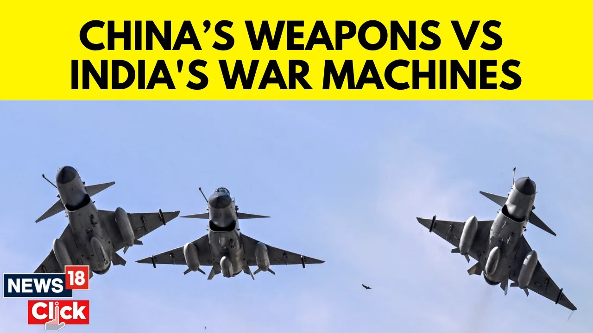

【中国武器的首次真实战场测试 | 印度巴基斯坦战争 | 印度对巴基斯坦 | N18G】
Summary: This conflict tests China's military exports, as Pakistan's Chinese-made arsenal faces India, impacting global perceptions of Chinese weapon credibility.
摘要： 这场冲突考验中国的军事出口，因为巴基斯坦的中国制造武器库面对印度，影响全球对中国武器可信度的看法。

⏱️ Estimated Reading Time: 6 min
This isn't just about India and Pakistan any more.
这不再仅仅是印度和巴基斯坦之间的事。
It's about China, its weapons, its credibility and whether its billion dollar military exports are worth the hype.
这关乎中国、其武器、其信誉，以及其价值数十亿美元的军事出口是否名副其实。
Pakistan's military today is overwhelmingly Chinese jets, missiles, radar and air defense systems.
如今巴基斯坦的军队主要装备中国的战斗机、导弹、雷达和防空系统。
Over 80% off its arsenal has been supplied by Beijing.
其武器库中超过80%由北京提供。
And now in this life-long conflict with India, China's weapons are being tested like never before.
而现在，在这场与印度的长期冲突中，中国的武器正经历前所未有的考验。
For decades, Chinese arms were dismissed as second grade knockoffs.
几十年来，中国武器被视为二流仿制品。
Cheaper, unproven and unreliable in real war.
价格低廉、未经实战检验且不可靠。
But now that war has arrived.
但现在战争已经到来。
The JF7, the J10C, HQ9B, air defense systems, PL 15 long range missiles, SH 15 artillery, submarines, frigates encrypted radios are all made in China.
JF7、J10C、HQ9B防空系统、PL-15远程导弹、SH-15火炮、潜艇、护卫舰加密无线电设备均由中国制造。
And the claim from Pakistan that their J10 Sea Fighters equipped with Chinese missiles took down Indian Rafales and Sukhy 30 in a high altitude dog fight India has confirmed it.
巴基斯坦声称其配备中国导弹的J10海战战斗机在高空狗斗中击落印度阵风和苏霍伊30，印度已证实此事。
But the story has already lit up in the Chinese stock markets.
但这一消息已在中国股市引发轰动。
AVIC Defense Stock Surges Nearly 40% On Claims [MUSIC] Alone.
仅凭这些说法，中航防务股票就飙升近40%。
For bashing it's the perfect sales pitch.
对于宣传来说，这是完美的销售说辞。
R Jets beat the West's best.
中国战斗机击败西方最好的战机。
But is that really what [MUSIC] happened?
但事实真的如此吗？
While Pakistan may boost up downing Indian jets the truth is that India's Rafiles and Sukoiy30 successfully hit nine terror camps across Pakistan and Pakistan occupied Kashmir under Operation Sindoor.
尽管巴基斯坦可能吹嘘击落印度战机，但事实是印度的阵风和苏霍伊30在“辛多尔行动”中成功打击了巴基斯坦及巴控克什米尔的九个恐怖营地。
That means one thing, Chinese made radars air defense systems including the HQ9 bes fail to intercept incoming Indian missiles.
这意味着一点，包括HQ9在内的中国制造雷达防空系统未能拦截来袭的印度导弹。
That's the serious dent in China's credibility.
这对中国的信誉造成严重打击。
Many experts argue the issue isn't always taking its tactics.
许多专家认为问题并不总是战术。
India's losses if any could be the result of poor coordination, restrictive engagement rules and misjudgement of Pakistani missile ranges.
印度的损失（如果有的话）可能是协调不力、交战规则限制以及对巴基斯坦导弹射程的误判所致。
But Other Ways the Weapons Have Spoken.
但武器在其他方面展现了实力。
The PL-15 missiles on Pakistan J10 sees may have longer range than India anticipated and that alone changes the game.
巴基斯坦J10配备的PL-15导弹射程可能比印度预期的更长，仅这一点就改变了局势。
This is not just a military face off but a global advertisement.
这不仅是一场军事对抗，更是一次全球广告。
Western bears are watching.
西方观察者正在关注。
Middle Eastern states are watching.
中东国家正在关注。
Africa, South East Asia all want to see if Chinese weapons can actually match up to the Western gear in battle.
非洲、东南亚都想看看中国武器是否真的能与西方装备匹敌。
For Years China Tried to Crack Markets Dominated by Russia and the US But Ukraine Hurt Russia's Export Brands.
多年来，中国试图打入由俄罗斯和美国主导的市场，但乌克兰战争损害了俄罗斯的出口品牌。
The India Pakistan War Could Now Either Make or Break China Shot at Global Arms [MUSIC] Dominance.
印巴战争现在可能成就或毁掉中国争夺全球武器主导权的机会。
But it's not just weapons.
但这不仅仅是武器。
China's intelligence network is watching this war unfold in real time with over 250 ISR satellites and deep access via Pakistan's military Beijing is gathering valuable data on Indian tactics, missile trajectories and radar signatures.
中国情报网络正通过250多颗ISR卫星和巴基斯坦军队的深度介入实时观察这场战争，北京正在收集有关印度战术、导弹轨迹和雷达特征的宝贵数据。
Its fishing vessels near Indian naval drills are likewise collecting surveillance intel for the [MUSIC] PLA.
其在印度海军演习附近的渔船同样在为解放军收集监视情报。
India isn't just fighting Pakistan, it may be countering Chinese tech, Chinese tactics, and possibly even Chinese strategic designs.
印度不仅在对抗巴基斯坦，还可能是在对抗中国的技术、战术，甚至可能是中国的战略设计。
The Pahalga Messiah was legally carried out using encrypted Huawei satellite phones and Chinese Ultrasat radio systems.
“帕哈尔加救世主”行动合法使用了加密的华为卫星电话和中国超星无线电系统。
If proven, China's fingerprints on this conflict go far beyond just military sales.
如果得到证实，中国在这场冲突中的痕迹远不止军事销售。
They signal indirect sponsorship of escalation while staying out of the direct line of fire.
这表明中国间接支持冲突升级，同时避开直接交火。
Pakistan Chinese made jets have engaged and may have scored hits but India's Western and Russian arsenal has penetrated Pakistan's defences and hit targets.
巴基斯坦的中国制造战机已参战并可能取得战果，但印度的西方和俄罗斯武器库已突破巴基斯坦防御并击中目标。
This is no less a theoretical comparison.
这不再只是理论上的比较。
It is now a real world test and the world is watching every missile that is fired.
这是一场现实世界的测试，全世界都在关注每一枚发射的导弹。
Every jet that falls to decide where the Chinese fire power can ever really replace the Western dominance.
每一架坠落的战机都将决定中国火力是否能真正取代西方的主导地位。